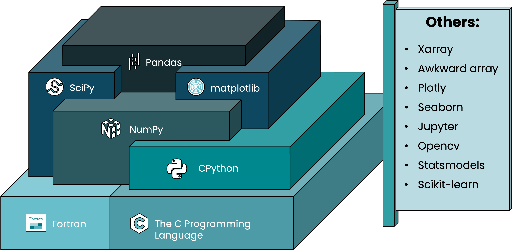

04 - Numpy and Pandas 1#
For the next few weeks, we start introducing three core Python modules/code libraty for data science: Numpy, Pandas and Matplotlib. Module is a file containing a set of functions you want to include in your application. For this week, we will focus on Numpy and Pandas.
Differences between Pandas and Numpy#
https://www.geeksforgeeks.org/difference-between-pandas-vs-numpy/
Pandas: An open-source library that provides high performance, fast, easy to use data structures and data analysis tools for manipulating numeric data and time series. Pandas is built on the numpy library and written in languages like Python, Cython, and C. In pandas, we can import data from various file formats like JSON, SQL, Microsoft Excel, etc.
Numpy: It is the fundamental library of python, used to perform scientific computing. It provides high-performance multidimensional arrays and tools to deal with them. A numpy array is a grid of values (of the same type) that are indexed by a tuple of positive integers, numpy arrays are fast, easy to understand, and give users the right to perform calculations across arrays.
Names |
Pandas |
Numpy |
|---|---|---|
Data types |
Tabular data |
Numerical data |
tools |
Data frame and Series |
Arrays |
Written languages |
Python, Numpy |
C |
Memeory |
Consumer more memory |
memory efficient |
Performance |
# of rows >= 500K |
# of rows <= 50K |
very slow |
very fast |
|
Objects |
2d table object (DataFrame) |
Multi-dimensional arrays |

When to use Pandas series, numpy ndarrays#
Numpy#
Overview#
Numpy is the fundamental package for scientific computing in Python. It provides a multidimensional array object, various derived objects (such as masked arrays and matrices), and an assortment of routines for fast operations on arrays, including mathematical, logical, shape manipulation, sorting, selecting, I/O, discrete Fourier transforms, basic linear algebra, basic statistical operations, random simulation and much more. Features of numpy include:
Fast array-based operations for data cleaning, subsetting and filtering, transformation
Storing multidimensional data
Common array algorithms like sorting, unique, and set operations
Efficient descriptive statistics and aggregating/summarizing data
Data alignment and relational data manipulations for merging and joining heterogeneous datasets
Expressing conditional logic as array expressions instead of loops with if-elif-else branches
Group-wise data manipulations (aggregation, transformation, and function application)
Exercises#
Before we do the exercises, you need to take care of two things:
Please go to Module 1 to find out how to install packages
Download data from here for today’s exercises. After you download all the data, under your current working directory, put them into a subdirectory and name it ‘data’
Today’s Notebook - Numpy Notebook